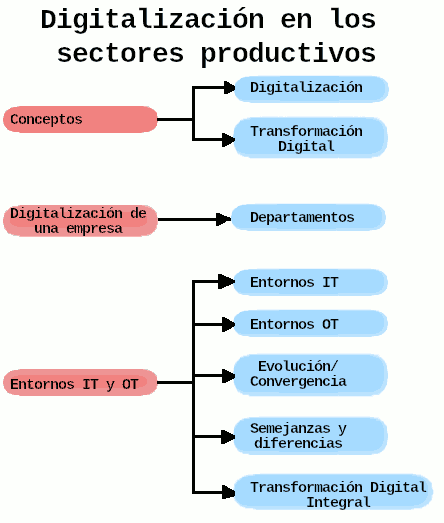

Las empresas "de ahora" no son como las "de antes". Todo lo que tradicionalmente se hacía de forma manual se ha ido digitalizando, a medida que se desarrollaban tecnologías que facilitaban las tareas de los trabajadores y de los directivos. Los cálculos a mano fuero sustituidos por las hojas Excel, los informes escritos cambiaron a documentos Word compartidos, las cartas dieron paso a los correos electrónicos y los teléfonos se convirtieron en smartphones.
En estos ejemplos, podemos ver que no solo hemos introducido máquinas en nuestras vidas, sino también que las hemos hecho "inteligentes", es decir, les incorporamos software cada vez más potente para que sean capaces de "pensar" (analizar y procesar información) y, basándose en ello, de tomar decisiones de forma autónoma.
